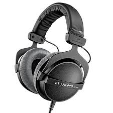

Le modèle DT770PRO est le grand classique des casques Beyerdynamic avec son excellente qualité de fabrication. Grâce à un son pur et haute résolution, le casque DT 770PRO circum-aural fermé est idéal pour l’enregistrement et le monitoring professionnel, il est aussi d’un grand confort grâce à des coussinets en velours. Pas de distorsion harmonique pour une écoute droite et très propre avec des attaques puissantes et réactives.
| Nom | Prix | Image |
| HT 770 PRO | 139€ |  |